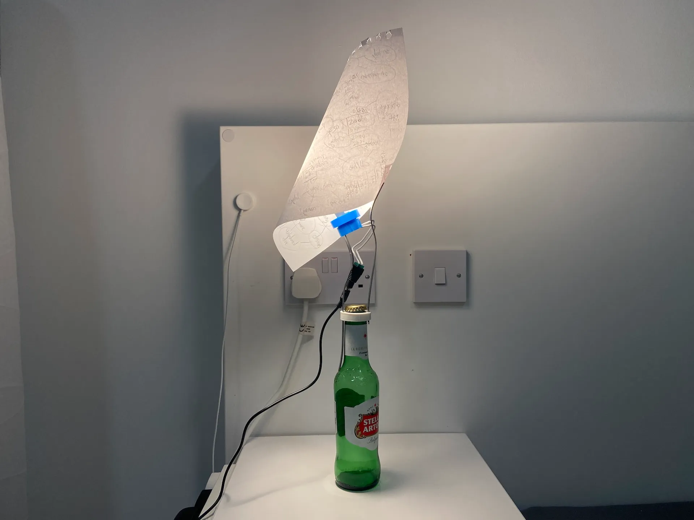
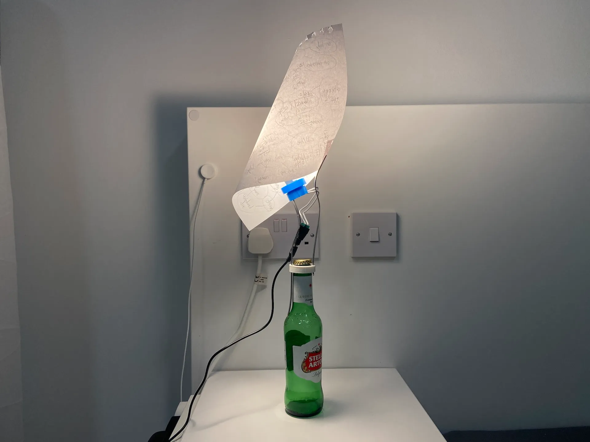
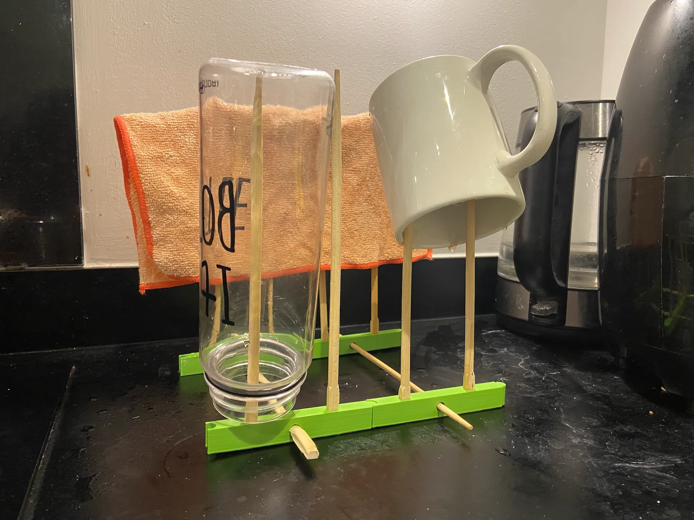
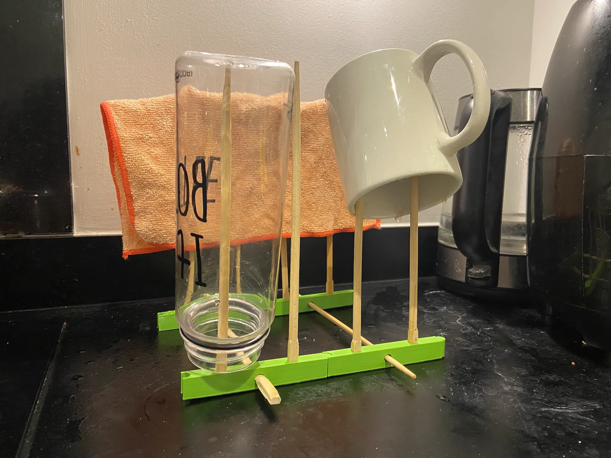

The mass-production leads to people buying products to meet their needs.
However, according to Adhocism, we might not need to buy some products as long as we have an improvising spirit.
(Think Robinson Crusoe, making a raft and then a shelter from the wreck of his ship)
These 3D-printed components made from 100% recycled filaments are showing how this ad-hoc approach can replace traditional consumerism.
All 3D files:
cults3d.com/en/users/Ramsol/creations
Adhocists:
instagram.com/adhocists
 

 
